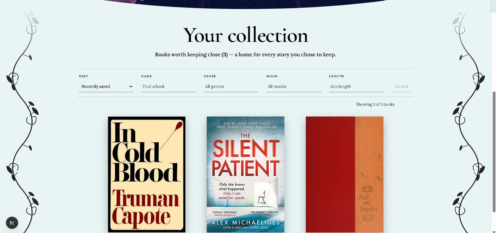

← All work
01 — Full stack · Recommendations
BookMatch
A book discovery app that learns each reader's taste from swipes and uses it to recommend the next books. I built it, with help from a second developer.
- Role
- Lead developer
- Team
- 2 people
- Status
- Live
- Links
- Live app ↗ · Code ↗
bookmatch.pages.dev

01Overview
- Readers swipe through books one at a time, save the ones they like, and keep them in a personal library with ratings and notes.
- The app also has genre-based discovery and search, and the interface is available in 5 languages.
02What I built
- The Next.js swipe interface, on top of an async FastAPI + PostgreSQL API with JWT authentication.
- The recommendation engine: books and readers share one vector space, and pgvector KNN search finds the books closest to each reader.
- The database side: 20+ migrations, row-level security, and automated nightly backups with GitHub Actions.
- File storage for book covers and profile pictures in Cloudflare R2, and deployment of the frontend on Cloudflare.
03Stack
- Next.js
- TypeScript
- Tailwind CSS
- FastAPI
- PostgreSQL
- pgvector
- Alembic
- JWT
- Cloudflare R2
- GitHub Actions
bookmatch.pages.dev/library
